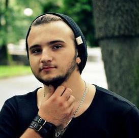

Hi there! Welcome to my site...
My name is Bohdan Batiiev. I was born in Ukraine on December 9th 1993 at 12.35 PM and since that moment I knew that I want to create something beatiful. In high school I was very interested in programming, so I decided to learn web development and create beatiful and useful web applications. After school I entered to the National Technical University of Ukraine "Kyiv Politechnic Institute" and after four years I got my Bachelor's degree. And now my dream comes true - I am web developer. I'm coding on JavaScript, in particular on EmberJS and JQuery and Ruby (Ruby on Rails). So if you want to have your own web site, contact with me and I promise to create for you beatiful site.
